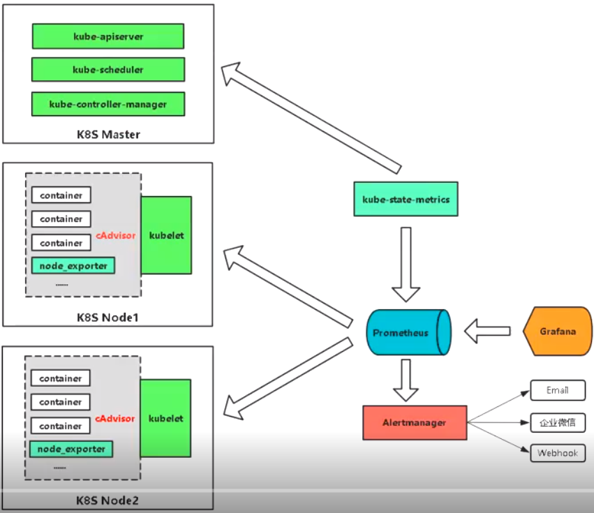

k8s
dokcer镜像
持续集成（Continuous Integration, CI）：代码合并、构建、部署、测试都在一起，不断执行这个过程，并对结果反馈。
持续部署（Continuous Deployment, CD）：部署到测试环境、预生产环境、生产环境。
持续交付（Continuous Delivery, CD）：将最终产品发布到生产环境，给用户使用。
k8s网络模型与CNI
- 一个Pod一个IP
- 每个Pod独立IP，Pod内所有容器共享网络namespace（同一个IP）
- 容器之间直接通信，不需要NAT
- Node和容器直接通信，不需要NAT
- 其他容器和容器自身看到的IP是一样的
- 集群内访问走Service，集群外访问走Ingress
- CNI（container network interface）用于配置Pod网络
- 不支持docker网络
Overlay网络
k8s服务发现
- 环境变量
- kubelet为每个Pod注入所有Service的环境变量信息，缺点：环境变量洪泛，docker启动参数过长直接导致启动容器失败
- 域名
- 所设Service（my-svc）在namespace（my-ns）中，暴露名为http的TCP端口：
- A记录：my-svc.my-ns -> Cluster IP
- SRV记录：_http._tcp.my-svc.my-ns -> http端口号
- 所设Service（my-svc）在namespace（my-ns）中，暴露名为http的TCP端口：
kubernetes DNS
- 解析Pod和Service的域名的，k8s集群内Pod使用
kubelet配置--cluster-dns把DNS的静态IP传递给每个容器，--cluster-domain配置伪域名 - Kube-dns和CoreDNS
- 对Service
- 对A记录
- 普通service：my-svc.my-namespace.svc.cluster.local -> Cluster IP
- headless service：my-svc.my-namespace.svc.cluster.local -> 后端Pod IP列表
- SRV记录：
- _my-port-name._my-port-protocol.my-svc.my-namespace.svc.cluster.local -> Service Port
- 对A记录
- 对Pod
- A记录
pod-ip.my-namespace.pod.cluster.local -> Pod IP - 在Pod Spec指定hostname和subdomain
hostname.subdomain.my-namespace.pod.cluster.local -> Pod IP
- A记录
k8s资源配置清单
资源清单格式：
一级字段：apiVersion(group/version), kind, metadata(name, namespace, labels, annotations, ...), spec, status(只读)
Pod资源：
- spec.containers <[]object>
- name <string>
image <string>
imagePullPolicy <string> Always,Never,IfNotPresent
标签：key=value
- key：字母、数字、_、-、.
- value：可以为空，只能字母或数字开关及结尾，中间可使用
标签选择器：
- 等值关系：=、==、!=
- 集合关系：KEY in (VALUE1, VALUE2...)，KEY notin (VALUE1, VALUE2...)，KEY，!KEY
许多资源支持内嵌字段定义其使用的标签选择器：
- matchLabels：直接给定键值
- matchExpressions：基于给定的表达式来定义使用标签选择器，{key: "KEY", operator: "OPERATOR", values: [VALUE1, VALUE2,...]}
- 操作符：in, notin, exists, notexists
nodeSelector <map[string]string>
nodeName <string>
pod的生命周期：
- 状态：Pending, Running, Failed, Succeeded, Unknown
- 创建pod：
service
工作模式：userspace, iptables, ipvs
- userspace: 1.1-
- iptables: 1.10-
- ipvs: 1.11+
类型：
- ExternalName
- ClusterIP
- NodePort
- LoadBalancer
PersistentVolume
- PersistentVolume(PV)：对存储资源创建和使用的抽象，使得存储作为集群中的资源管理
- 静态（static）
集群管理员创建多个PV。 它们携带可供集群用户使用的真实存储的详细信息。 - 动态（dynamic）
当管理员创建的静态PV都不匹配用户的PersistentVolumeClaim时，集群可能会尝试为PVC动态配置卷。此配置基于StorageClasses：PVC必须请求一个类，并且管理员必须已创建
- 静态（static）
- PersistentVolumeClaim(PVC)：让用户不需要关心具体的Volume实现细节
例，基于nfs的动态存储
- 创建rbac授权
apiVersion: v1
kind: ServiceAccount
metadata:
name: nfs-provisioner
namespace: monitoring
---
kind: ClusterRole
apiVersion: rbac.authorization.k8s.io/v1
metadata:
name: nfs-provisioner-runner
namespace: monitoring
rules:
- apiGroups: [""]
resources: ["persistentvolumes"]
verbs: ["get", "list", "watch", "create", "delete"]
- apiGroups: [""]
resources: ["persistentvolumeclaims"]
verbs: ["get", "list", "watch", "update"]
- apiGroups: ["storage.k8s.io"]
resources: ["storageclasses"]
verbs: ["get", "list", "watch"]
- apiGroups: [""]
resources: ["events"]
verbs: ["watch", "create", "update", "patch"]
- apiGroups: [""]
resources: ["services", "endpoints"]
verbs: ["get","create","list", "watch","update"]
- apiGroups: ["extensions"]
resources: ["podsecuritypolicies"]
resourceNames: ["nfs-provisioner"]
verbs: ["use"]
---
kind: ClusterRoleBinding
apiVersion: rbac.authorization.k8s.io/v1
metadata:
name: run-nfs-provisioner
subjects:
- kind: ServiceAccount
name: nfs-provisioner
namespace: monitoring
roleRef:
kind: ClusterRole
name: nfs-provisioner-runner
apiGroup: rbac.authorization.k8s.io
- 创建nfs的nfs-client-provisioner
kind: Deployment
apiVersion: extensions/v1beta1
metadata:
name: nfs-client-provisioner
namespace: monitoring
spec:
replicas: 1
strategy:
type: Recreate
template:
metadata:
labels:
app: nfs-client-provisioner
spec:
serviceAccount: nfs-provisioner
containers:
- name: nfs-client-provisioner
image: quay.io/external_storage/nfs-client-provisioner:latest
volumeMounts:
- name: nfs-client-root
mountPath: /persistentvolumes
env:
- name: PROVISIONER_NAME
value: fuseim.pri/ifs
- name: NFS_SERVER
value: 10.2.68.77
- name: NFS_PATH
value: /data/opv
volumes:
- name: nfs-client-root
nfs:
server: 192.168.1.1
path: /data/opv
- 创建StorageClass
apiVersion: storage.k8s.io/v1
kind: StorageClass
metadata:
name: grafana-nfs
namespace: monitoring
provisioner: fuseim.pri/ifs #fuseim.pri/ifs为上面deployment上创建的PROVISIONER_NAME
reclaimPolicy: Retain
- 创建PersistentVolumeClaim
在存储类被正确创建后，就可以创建PersistentVolumeClaim来请求StorageClass，而StorageClass将会为PersistentVolumeClaim自动创建一个可用PersistentVolume。PersistentVolumeClaim是对PersistentVolume的声明，即PersistentVolume为存储的提供者，而PersistentVolumeClaim为存储的消费者。
apiVersion: v1
kind: PersistentVolumeClaim
metadata:
name: test-claim
namespace: monitoring
# annotations:
# volume.beta.kubernetes.io/storage-class: "grafana-nfs"
spec: storageClassName: grafana-nfs
accessModes:
- ReadWriteMany
resources:
requests:
storage: 1Gi #grafana-nfs为上面创建的storageclass的name，1Gi是设置的目录的大小。
- testpod
kind: Pod
apiVersion: v1
metadata:
name: test-pod
namespace: monitoring
spec:
containers:
- name: test-pod
image: busybox
command:
- "/bin/sh"
args:
- "-c"
- "touch /mnt/SUCCESS && exit 0 || exit 1"
volumeMounts:
- name: nfs-pvc
mountPath: "/mnt"
restartPolicy: "Never"
volumes:
- name: nfs-pvc
persistentVolumeClaim:
claimName: test-claim
Secret
加密数据并存放在etcd中，让Pod的容器以挂载Volume方式访问。应用场景：凭据
Pod使用secret两种方式：
- 变量注入
echo -n 'admin' | base64 #加密防止数据以明文显示
YWRtaW4=
echo -n '1f2d1e2e67df' | base64 #加密防止数据以明文显示
MWYyZDFlMmU2N2Rm
mysecret.yaml文件：
apiVersion: v1
kind: Secret
metadata:
name: mysecret
type: Opaque
data:
username: YWRtaW4=
password: MWYyZDFlMmU2N2Rm
---
apiVersion: v1
kind: Pod
metadata:
name: mypod
spec:
containers:
- name: nginx
image: nginx
env:
- name: SECRET_USERNAME
valueFrom:
secretKeyRef:
name: mysecret #引用上文中创建的mysecret
key: username
- name: SECRET_PASSWORD
valueFrom:
secretKeyRef:
name: mysecret
key: password
- 挂载
echo -n 'admin' | base64 #加密防止数据以明文显示
YWRtaW4=
echo -n '1f2d1e2e67df' | base64 #加密防止数据以明文显示
MWYyZDFlMmU2N2Rm
mysecret.yaml文件：
apiVersion: v1
kind: Secret
metadata:
name: mysecret
type: Opaque
data:
username: YWRtaW4=
password: MWYyZDFlMmU2N2Rm
---
apiVersion: v1
kind: Pod
metadata:
name: db
labels:
name: db
spec:
volumes:
- name: secrets
secret:
secretName: mysecret #引用上文中创建的mysecret
containers:
- image: gcr.io/my_project_id/pg:v1
name: db
volumeMounts:
- name: secrets
mountPath: "/etc/secrets"
readOnly: true
ports:
- name: cp
containerPort: 5432
hostPort: 5432
ConfigMap
与Secret类似，区别在于configMap保存的是不需要加密配置的信息。应用场景：应用配置
apiVersion: v1
kind: ConfigMap
metadata:
name: myconfig
namespace: default
data:
special.level: info
special.type: hello
---
apiVersion: v1
kind: Pod
metadata:
name: mypod
spec:
containers:
- name: busybox
image: busybox
command: ["/bin/sh", "-c", "echo $(LEVEL) $(TYPE)" ]
env:
- name: LEVEL
valueFrom:
configMapKeyRef:
name: myconfig
key: special.level
- name: TYPE
valueFrom:
configMapKeyRef:
name: myconfig
key: special.type
restartPolicy: Never
RBAC
RBAC（Role-Based Access Control，基于角色的访问控制），允许通过Kubernetes API动态配置策略。要使用RBAC授权模式，需要在API Server的启动参数中加上--authorization-mode=RBAC
RBAC引入了4个新的顶级资源对象：Role、ClusterRole、RoleBinding、ClusterRoleBinding。
- Role
一个角色就是一组权限的集合，这里权限都是许可形式的，不存在拒绝的规则。在一个命名空间中，可以用角色来定义一个角色，如果是集群级别的，就需要使用ClusterRole。Role（角色）只能对命名空间内的资源进行授权。
例如，定义角色具备读取Pod的权限：
apiversion: rbac.authorization.k8s.io/v1beta1
kind: Role
metadata:
name: pod-reader
namespace: default
rules:
- apiGroups: [""] #空字符串表示核心API群
resources: ["pods"]
verbs: ["get", "watch", "list"]
rules中的参数说明：
apiGroups：支持API组列表，例如：apiVersion: batch/v1、apiVersion: extensions/v1beta1、apiVersion: apps/v1beta1等
resources：支持资源对象列表，例如：Pods、Deployments、Jobs等
verbs：对资源对象的操作方法列表，例如：get、watch、list、delete、replace、patch等
- ClusterRole
集群角色除了具有和角色一致的命名空间内资源的管理能力，因其集群级别的范围，还可以用于以下特殊元素的授权。- 集群范围的资源，例如Node
- 非资源型的路径，例如/healthz
- 包含全部命名空间的资源，例如pods
例如，下面集群角色可以让用户有权访问任意一个或所有命名空间的secrets：
apiversion: rbac.authorization.k8s.io/v1beta1
kind: ClusterRole
metadata:
name: secret-reader
#ClusterRole不受限于命名空间，所以省略了namespace的定义
rules:
- apiGroups: [""]
resources: ["secrets"]
verbs: ["get", "watch", "list"]
- RoleBinding & ClusterRoleBinding
角色绑定或集群角色绑定用来把一个角色绑定到一个目标上，绑定目标可以是User、Group或者Service Account。使用RoleBinding为某个命名空间授权，ClusterRoleBinding为集群范围内授权。
例如，RoleBinding将在default命名空间中把pod-reader角色授予用户jane，可以让jane用户读取default命名空间中的Pod：
apiVersion: rbac.authorization.k8s.io/v1beta1
kind: RoleBinding
metadata:
name: read-pods
namespace: default
subjects:
- kind: User
name: jane
apiGroup: rbac.authorization.k8s.io
roleRef:
kind: Role
name: pod-reader
apiGroup: rbac.authorization.k8s.io
RoleBinding也可以引用ClusterRole，对属于同一命名空间内ClusterRole定义资源主体进行授权。一种常见的做法是集群管理员为集群范围预先定义好一组角色（ClusterRole），然后在多个命名空间中重复使用这些ClusterRole。
例如，使用RoleBinding绑定集群角色secret-reader，使dave只能读取development命令空间中的secret：
apiVersion: rbac.authorization.k8s.io/v1beta1
kind: RoleBinding
metadata:
name: read-secrets
namespace: development
subjects:
- kind: User
name: dave
apiGroup: rbac.authorization.k8s.io
roleRef:
kind: ClusterRole
name: secret-reader
apiGroup: rbac.authorization.k8s.io
集群角色绑定中的角色只能是集群角色，用于进行集群级别或者对所有命名空间都生效的授权。
例如，允许manager组的用户读取任意namespace中的secret：
apiVersion: rbac.authorization.k8s.io/v1beta1
kind: ClusterRoleBinding
metadata:
name: read-secrets-global
subjects:
- kind: Group
name: manager
apiGroup: rbac.authorization.k8s.io
roleRef:
kind: ClusterRole
name: secret-reader
apiGroup: rbac.authorization.k8s.io
多数资源可以用其名称的字符串来表达，也就是Endpoint中的URL相对路径，例如pods。然后，某些Kubernetes API包含下级资源，例如Pod的日志logs。Pod的日志的Endpoint是GET /api/v1/namespaces/{namespaces}/pods/{name}/log。
Pod是一个命名空间内的资源，log就是一个下级资源。要在一个RBAC角色中体现，则需要用斜线“/”来分割资源和下级资源。若想授权让某个主体同时能够读取Pod和Pod log，则可以配置resources为一个数组：
apiVersion: rbac.authorization.k8s.io/v1beta1
kind: Role
metadata:
name: pod-and-pod-logs-reader
namespace: default
rules:
- apiGroups: [""]
resources: ["pods", "pods/log"]
verbs: ["get", "list"]
资源还可以通过名字（ResourceName）进行引用。在指定ResourceName后，使用get、delete、update、patch动词的请求，就会被限制在这个资源实例范围内。
例如，下面的声明让一个主体只能对一个叫my-configmap的ConfigMap进行get和update操作：
apiVersion: rbac.authorization.k8s.io/v1beta1
kind: Role
metadata:
name: configmap-updater
namespace: default
rules:
- apiGroups: [""]
resources: ["configmap"]
resourceNames: ["my-configmap"]
verbs: ["update", "get"]
Admission Control（准入控制）
Admission Control实际上是一个准入控制插件列表，发送到API Server的请求都需要经过这个列表中的每个准入控制器插件的检查，检查不通过，则拒绝请求。
1.11版本以上推荐使用的插件：
--enable-admission-plugins=NamespaceLifecycle,LimitRanger,ServiceAccount,DefaultStorgeClass,DefaultTolerationSeconds,ResourceQuota
监控Prometheus
Prometheus特点：
- 多维数据模型：由度量名称和键值对标识的时间序列数据
- PromSQL：一种灵活的查询语言，可以利用多维数据完成复杂的查询
- 不依赖分布式存储，单个服务器节点可直接工作
- 基于HTTP的pull方式采集时间序列数据
- 推送时间序列数据通过PushGateway组件支持
- 通过服务发现或静态配置发现目标
- 多种图形模式及仪表盘支持（grafana）
Prometheus组成及架构
- Prometheus Server：收集指标和存储时间序列数据，并提供查询接口
- ClientLibrary：客户端库
- Push Gateway：短期存储指标数据。主要用于临时性的任务
- Exporters：采集已有的第三方服务监控指标并暴露metrics
- Alertmanager：告警
- Web UI：简单的Web控制台

数据模型
prometheus将所有数据存储为时间序列；具有相同度量名称以及标签属于同一个指标。每个时间序列都由度量标准名称和一组键值对（也成为标签）唯一标识。
时间序列格式：<metric name>{<label name>=<label value>, ...}
作业和实例
实例：可以抓取的目标称为实例（Instances）
作业：具有相同目标的实例集合称为作业（Job）
scrape_configs:
- job_name: 'prometheus'
static_configs:
- targets: ['localhost:9090']
- job_name: 'node'
static_configs:
- targets: ['192.168.1.10:9090']
k8s监控指标
- Prometheus监控K8S架构

| 监控指标 | 具体实现 | 举例 |
|---|---|---|
| Pod性能 | cAdvisor | 窗口CPU，内存利用率 |
| Node性能 | node-exporter | 节点CPU，内存利用率 |
| K8S资源对象 | kube-state-metrics | Pod/Deployment/Service |
- Kubernetes本身监控
- Node资源利用率
- Node数量
- Pods数量（Nodde）
- 资源对象状态
- Pod监控
- Pod数量（项目）
- 容器资源利用率
- 应用程序
案例
授予wower账户访问pod的权限：
- 首先生成wower账户相关的证书和私钥
wower-kubeconfig.sh为生成wower证书密钥的脚本：
cat > ca-config.json << - EOF
{
"signing": {
"default": {
"expiry": "87600h"
},
"profiles": {
"kubernetes": {
"usages": [
"signing",
"key encipherment",
"server auth",
"client auth"
],
"expiry": "87600h"
}
}
}
}
EOF
cat > wower-csr.json << - EOF
{
"CN": "wower",
"hosts": [],
"key": {
"algo": "rsa",
"size": 2048
},
"names": [
{
"C": "CN",
"L": "Shenzhen",
"ST": "Guangdong"
}
]
}
EOF
cfssl gencert -ca=/etc/kubernetes/pki/ca.crt -ca-key=/etc/kubernetes/pki/ca.key -config=/opt/kubernetes/ssl/ca-config.json -profile=kubernetes wower-csr.json | cfssljson -bare wower
kubectl config set-cluster kubernetes \
--certificate-authority=/etc/kubernetes/pki/ca.crt \
--embed-certs=true \
--server=https://192.168.1.6:6443 \
--kubeconfig=wower-kubeconfig
kubectl config set-credentials wower \
--client-key=wower-key.pem \
--client-certificate=wower.pem \
--embed-certs=true \
--kubeconfig=wower-kubeconfig
kubectl config set-context default \
--cluster=kubernetes \
--user=wower \
--kubeconfig=wower-kubeconfig
kubectl config use-context default --kubeconfig=wower-kubeconfig
上述命令中引用的ca.crt为生成apiserver证书的CA证书，ca.key为CA密钥
- 给wower账户绑定访问pod的权限
wower-rbac.sh为绑定wower账户访问pod的权限的脚本：
apiVersion: rbac.authorization.k8s.io/v1
kind: Role
metadata:
name: pod-reader
namespace: default
rules:
- apiGroups: [""]
resources: ["pods"]
verbs: ["get", "watch", "list"]
---
apiVersion: rbac.authorization.k8s.io/v1
kind: RoleBinding
metadata:
name: read-pods
namespace: default
subjects:
- kind: User
name: wower #为要绑定的账户
apiGroup: rbac.authorization.k8s.io
roleRef:
kind: Role
name: pod-reader
apiGroup: rbac.authorization.k8s.io
经过生成相关证书和绑定相关权限后wower用户便有了访问pod的权限，可以通过“kubectl get pods --kubeconfig=wower-kubeconfig”来验证。